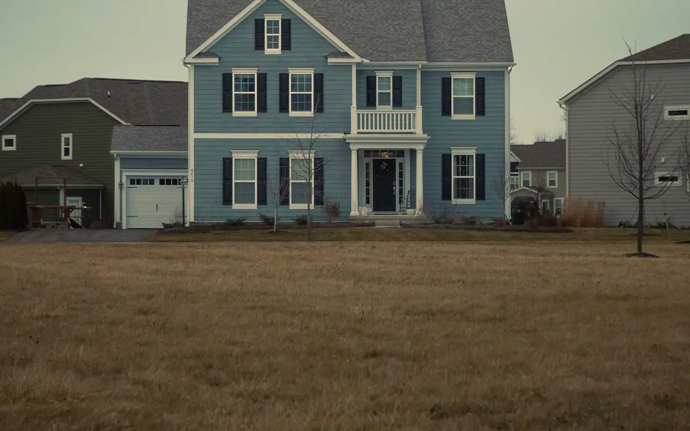

Inwood NY · 11096 · Nassau County
Garage Door Repair Inwood, NY
Same-day garage door repair throughout Inwood NY 11096. One of the Five Towns' most compact and waterfront-proximate communities — Inwood homes face the most concentrated salt air conditions of any Five Towns neighborhood. We carry coastal-rated hardware on every truck and fix springs, cables, and openers the same day you call. Free written estimate. Written warranty.
- Same-Day Service
- Coastal-Rated Hardware
- Free Written Estimate
- Written Warranty
Garage Door Service in Inwood
Inwood NY 11096 — The Five Towns' Most Waterfront Community
Inwood is the smallest and most tightly bounded of the Five Towns communities — a compact neighborhood surrounded on multiple sides by water. Jamaica Bay to the north, Reynolds Channel to the south, and the waterways of the Inwood Country Club to the east create a salt air environment that is more concentrated than anywhere else in the Five Towns. This is the single most important fact about garage door service in Inwood: everything corrodes faster here.
Older homes, smaller garages, decades of salt air
Inwood's housing stock is predominantly older — the community developed in the 1930s and 1940s, with most of the residential streets established well before the postwar boom that shaped the other Five Towns. Many homes have smaller single-car garages with lower ceilings and original or once-updated hardware that has been exposed to decades of salt air. We see more cable and spring corrosion per service call in Inwood than anywhere else in the Five Towns — and we come prepared for it.
Galvanized cables are the minimum, not an upgrade
For Inwood homeowners, galvanized steel cables are the minimum — not an upgrade. Direct waterfront properties on the streets adjacent to Reynolds Channel should use marine-grade 316 stainless steel cables, the same specification we recommend for Lawrence Bay properties. Zinc-coated springs outlast standard springs significantly in the Inwood environment. We make these recommendations without upselling — we make them because the alternative is returning to replace standard hardware two or three years sooner than necessary.
Extension springs always get safety cables
Inwood's smaller garages also mean different spring configurations. Lower-ceiling single-car garages sometimes use extension springs rather than torsion springs — and extension spring hardware requires safety cables to contain the spring if it ever breaks under load. We install safety cables on every extension spring replacement in Inwood as a standard practice, not an add-on.
Inwood Coastal Environment Note
Inwood is surrounded by water on multiple sides — Jamaica Bay, Reynolds Channel, and interior waterways create a salt air environment more concentrated than any other Five Towns community. We recommend galvanized steel cables as the minimum for all Inwood properties, and marine-grade 316 stainless steel for homes directly adjacent to Reynolds Channel and the southern waterfront streets. Zinc-coated springs and semi-annual lubrication are also recommended. Ask us about the right hardware specification for your specific Inwood address at (516) 612-9317.
| Torsion Spring Replacement | $295 |
|---|---|
| Extension Spring + Safety Cables Safety cables standard on all Inwood extension spring installs | $165 |
| High-Cycle Spring Upgrade | $380 |
| Galvanized Cable Replacement Recommended minimum for all Inwood properties | $135 |
| Marine-Grade SS Cables For waterfront Reynolds Channel properties | $175 |
| Roller Replacement | $35/roller |
| Track Realignment | $175 |
| Opener Gear Kit | $130 |
| Annual / Semi-Annual Tune-Up | $99 |
| Written Estimate | FREE |
Starting prices. You receive a free written estimate before any work begins.
(516) 612-9317 — Same DayServices in Inwood NY 11096
What We Repair & Install in Inwood
Spring Repair
Torsion and extension spring replacement same day in Inwood. Extension springs with safety cables are standard on Inwood's older lower-ceiling single-car garages. Salt air accelerates spring corrosion here more than any other Five Towns community — zinc-coated springs are recommended. Do not use a door with a broken spring.
Coastal Cable Service
Galvanized steel cables are the minimum recommendation for all Inwood properties. For homes directly adjacent to Reynolds Channel and the southern waterfront streets, we install marine-grade 316 stainless steel cables — the same spec used in marine hardware. Both cables replaced simultaneously on every installation. Salt air failure is preventable with the right hardware specification.
Opener Repair & Install
Same-day opener repair throughout Inwood for all major brands. Inwood's older single-car garages sometimes have lower ceilings where standard rail openers have limited clearance — we assess the specific ceiling height and recommend the right opener configuration, including LiftMaster wall-mount options where overhead clearance is tight.
Complete Hardware Refresh
For older Inwood homes where the full hardware system has been exposed to salt air for decades, a complete hardware refresh — new springs, cables, rollers, hinges, and hardware — often makes more sense than replacing components one at a time. We assess the full system and provide a written estimate for the complete refresh versus individual repairs.
New Door Installation
New door installation throughout Inwood with free in-home estimate. For Inwood's waterfront environment, aluminum doors resist corrosion without any additional treatment — a significant advantage over steel in this environment. Insulated steel with galvanized panels is the alternative for homeowners who prefer the traditional look.
Semi-Annual Tune-Up
Annual service is not enough for Inwood's waterfront environment — semi-annual is the right interval. Full 22-point inspection, lubrication with corrosion-resistant products, hardware tightening, safety tests, and written condition report. Identifies salt air damage before it becomes an emergency call. Spring and fall timing is ideal for Inwood homes.
Homeowner Guide
Protecting Garage Door Hardware in Inwood's Salt Air
Salt air failure is preventable. These are the habits and hardware choices that keep an Inwood door from becoming an emergency call.
Lubricate Twice a Year
Plan on service every spring and fall rather than once a year. Corrosion-resistant lubrication on springs, rollers, hinges, and bearings slows salt damage, and each visit is a chance to catch rust on cables and spring coils before they fail under load.
Inspect Cables & Springs
Between visits, look — don't touch — at the lifting cables and springs. Call for service if you see:
- Rust, fraying, or broken strands on a cable
- Rust or gaps between spring coils
- An extension spring without a safety cable through it
- A door that hangs crooked or feels heavy
Be Ready for Storm Season
Nor'easters and summer Atlantic storms bring recurring power outages to the South Shore. An opener with integrated battery backup keeps the door working when the power is out. Coastal humidity can also cloud safety-sensor lenses — keep them clean so the door doesn't reverse on a false obstruction.
Broken Spring or Snapped Cable?
Do not use a door with a broken spring or cable — it can fall suddenly without warning. Don't operate the opener or try to lift it by hand. Call the Inwood line at (516) 612-9317 for same-day garage door repair.
Inwood Garage Door FAQ
Questions from Inwood Homeowners
What Inwood NY 11096 homeowners ask us most — answered directly. More in our garage door FAQ.
Who repairs garage doors in Inwood NY?
Five Towns Garage Door provides same-day garage door repair throughout Inwood NY 11096. Call (516) 612-9317 any time — evenings, weekends, and holidays included. We typically arrive within 2–4 hours, call 30 minutes before arrival, and provide a free written estimate before any work begins.
Why does my Inwood garage door hardware corrode so quickly?
Inwood is surrounded by water on multiple sides — Jamaica Bay, Reynolds Channel, and the waterways of the Inwood Country Club. The salt air concentration here is higher than anywhere else in the Five Towns. Standard steel cables and springs corrode faster than on inland properties — sometimes in half the expected lifespan. We recommend galvanized cables as a minimum for all Inwood properties and marine-grade 316 stainless steel for waterfront streets. Zinc-coated springs and semi-annual lubrication help significantly. Call (516) 612-9317.
How much does garage door repair cost in Inwood NY?
Extension spring repair starts from $145. Torsion spring replacement starts from $295. Galvanized cable replacement starts from $135, and marine-grade stainless steel cables for Inwood waterfront properties start from $175. Free written estimate before any work. Call (516) 612-9317.
My Inwood garage has a low ceiling — what opener can I install?
Inwood's older single-car garages often have lower ceiling heights than standard. If headroom is limited, a LiftMaster wall-mount opener (8500W series) eliminates the overhead rail entirely and requires minimal clearance above the door. For garages with some overhead clearance but not enough for a standard installation, low-headroom track kits are available for belt and chain drive openers. We assess your specific ceiling and recommend the right configuration. Call (516) 612-9317.
Should I repair or replace my older Inwood garage door?
Inwood has some of the oldest housing stock in the Five Towns, and we regularly service garage door systems that are 30 or more years old — we carry parts for older hardware configurations. The honest answer: if the door structure is sound and the hardware hasn't completely failed, repair is usually the better value. If the cables, springs, rollers, and hinges are all at end of life — as is common on older Inwood doors with decades of salt air exposure — a complete hardware refresh or new door installation may be more economical than replacing components individually over the next few years. We give you both options with written estimates for each. Call (516) 612-9317.
How often should I service my garage door in Inwood?
Semi-annual is the right interval for most Inwood properties — spring and fall. The salt air environment here accelerates hardware wear faster than annual service can catch. A $99 tune-up twice a year identifies corrosion, lubricates with corrosion-resistant products, checks spring and cable condition, and tests safety systems. It's significantly less expensive than an emergency call from a failure that semi-annual service would have caught. Call (516) 612-9317.
Also Serving
Other Five Towns We Service
Google Reviews
What Customers Say
4.7 out of 5 stars from 15 Google reviews (as of September 2026). Reviews are quoted as written.
It was a great experience from start to finish. Sales rep helped us choose the door, and it turned out great. The young man who installed it did a great job. He was very pleasant and professional. Five Towns Garage Doors has my highest recommendations.
The garage door repair technician was friendly and helpful and he was there to fix my door not to just sell me a bunch of parts. He is the reason I would have this company back to my house. The scheduling was easy and the people were pleasant on the phone.
Having an issue with our external keypad/remote caused us to contact Five Towns Garage Doors. The company helped us contact the manufacturer for technical assistance instead of just charging us for a service call, saving us time and money. If we ever need garage door repair again, we will definitely use them.
Garage Door Repair Inwood NY 11096
Same-day service · Coastal hardware specialists · Salt air corrosion experts · Free written estimate · Evenings & weekends
Main line: (516) 490-0931